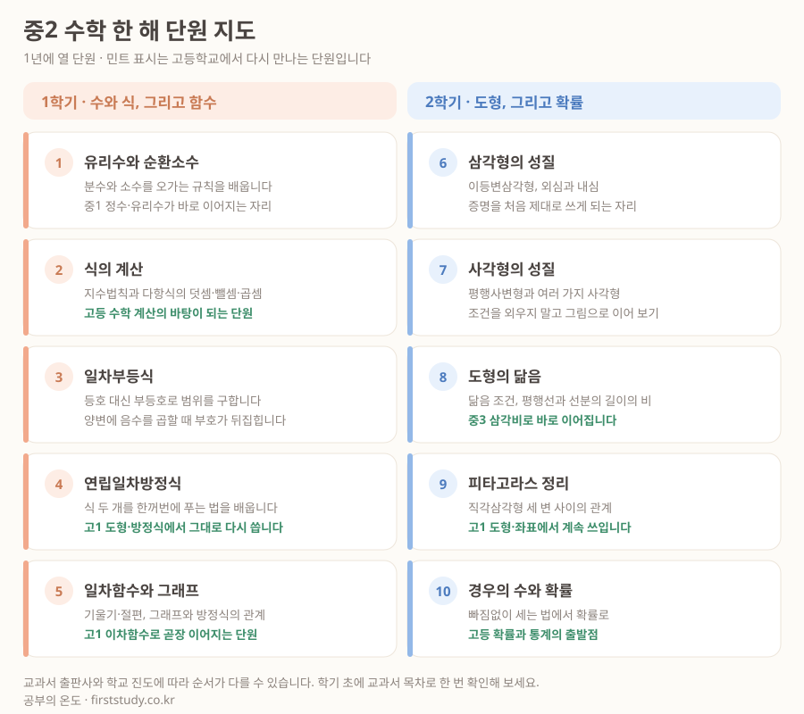

아이가 "수학이 어렵다"고 할 때, 부모 입장에서 제일 답답한 건 어디가 어려운지 모른다는 점입니다. 단원 이름을 들어도 그게 한 해 중 어디쯤인지, 앞의 무엇과 이어지는지 감이 안 옵니다.
중학교 2학년 수학은 한 해에 열 단원입니다. 1학기는 식과 함수, 2학기는 도형과 확률로 나뉩니다. 한 장으로 펼쳐 놓으면 지금 막힌 자리가 어디인지가 훨씬 빨리 보입니다.

1학기는 '식', 2학기는 '도형'입니다
중2 수학이 앞뒤로 성격이 크게 갈린다는 점부터 알아 두시면 좋습니다.
1학기는 계산과 식의 학기입니다. 순환소수로 시작해 지수법칙, 부등식, 연립방정식을 지나 일차함수로 끝납니다. 앞 단원이 뒤 단원의 도구가 되는 구조라, 식의 계산에서 흔들리면 연립방정식에서 반드시 다시 걸립니다. 1학기는 밀리면 안 되는 학기입니다.
2학기는 증명과 도형의 학기입니다. 삼각형·사각형의 성질에서 처음으로 "왜 그런지 써서 설명하는" 훈련이 시작됩니다. 계산은 잘하는데 2학기부터 갑자기 점수가 떨어지는 아이가 매년 나오는데, 실력이 준 게 아니라 요구하는 능력이 바뀐 것입니다.
1학기에 무너지는 아이는 계산이 안 되는 아이이고, 2학기에 무너지는 아이는 설명을 못 쓰는 아이입니다. 처방이 다릅니다.
고등학교에서 다시 만나는 단원
그림에서 민트색으로 표시한 단원은 고등학교에서 형태를 바꿔 다시 나오는 것들입니다.
- 식의 계산 — 고등학교 수학의 모든 계산이 여기 위에 올라갑니다.
- 연립일차방정식 — 고1 도형·방정식 단원에서 그대로 쓰입니다.
- 일차함수와 그래프 — 고1 이차함수로 곧장 이어집니다. 기울기와 절편의 뜻을 말로 설명 못 하면 여기서 막힙니다.
- 도형의 닮음 — 중3 삼각비의 바탕입니다.
- 피타고라스 정리 — 고등학교 도형·좌표 문제에서 계속 등장합니다.
- 경우의 수와 확률 — 고등 확률과 통계의 출발점입니다.
열 단원 중 여섯 개가 위로 이어집니다. 중2 수학을 "한 해만 버티면 되는 과목"으로 볼 수 없는 이유입니다.
이 지도를 쓰는 법
- 아이에게 단원 이름만 읽어 주고 짚게 해 보세요. "어디까지 배웠어?"보다 정확합니다. 배운 단원인데 이름이 낯설면 그 단원은 다시 봐야 합니다.
- 막힌 단원의 왼쪽을 보세요. 대개 진짜 원인은 그 단원이 아니라 바로 앞 단원에 있습니다. 연립방정식이 안 되면 식의 계산부터 확인합니다.
- 방학 계획은 민트색부터 채우세요. 시간이 한정돼 있다면 고등학교로 이어지는 단원을 먼저 메우는 편이 남습니다.
교과서 출판사와 학교 진도에 따라 순서가 조금씩 다를 수 있습니다. 학기 초에 아이 교과서 목차와 한 번 맞춰 보시면 더 정확합니다.
어느 단원에서 막혔는지 모르겠다면
지난 시험지 한 장이면 대개 보입니다. 틀린 문제가 어느 단원에 몰려 있는지, 그게 계산 문제인지 설명 문제인지까지 같이 봐 드립니다.
상담은 무료이고, 그 자리에서 방문·화상·학습센터 중 무엇이 맞을지도 함께 정하실 수 있습니다.
무료 상담 신청하기위 그림은 공부의 온도가 중학교 2학년 수학 교육과정을 정리한 것입니다. 출처를 밝히시면 자유롭게 옮겨 쓰셔도 됩니다.